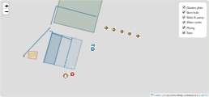
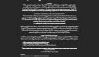
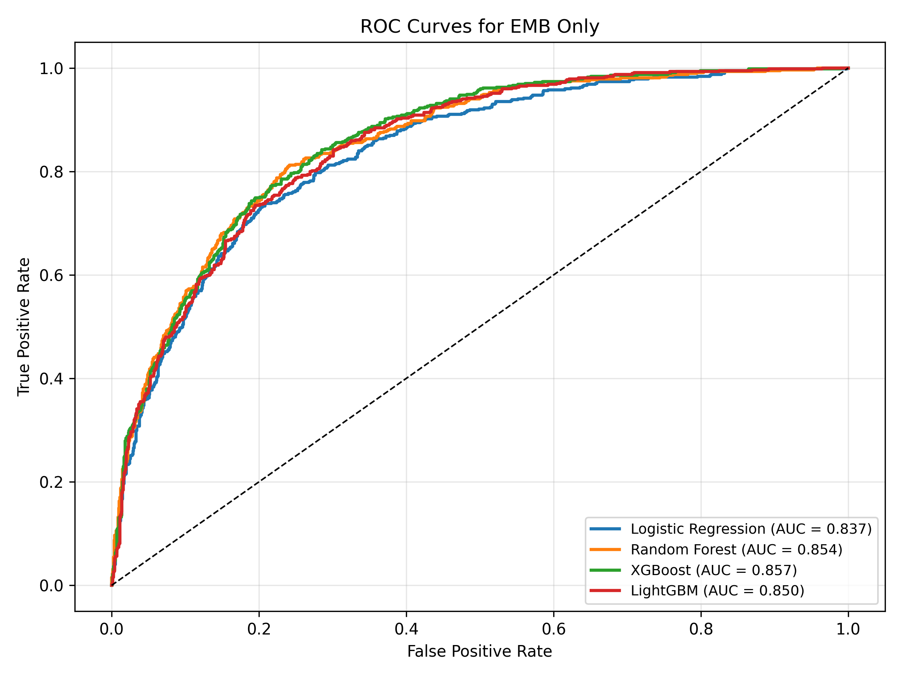
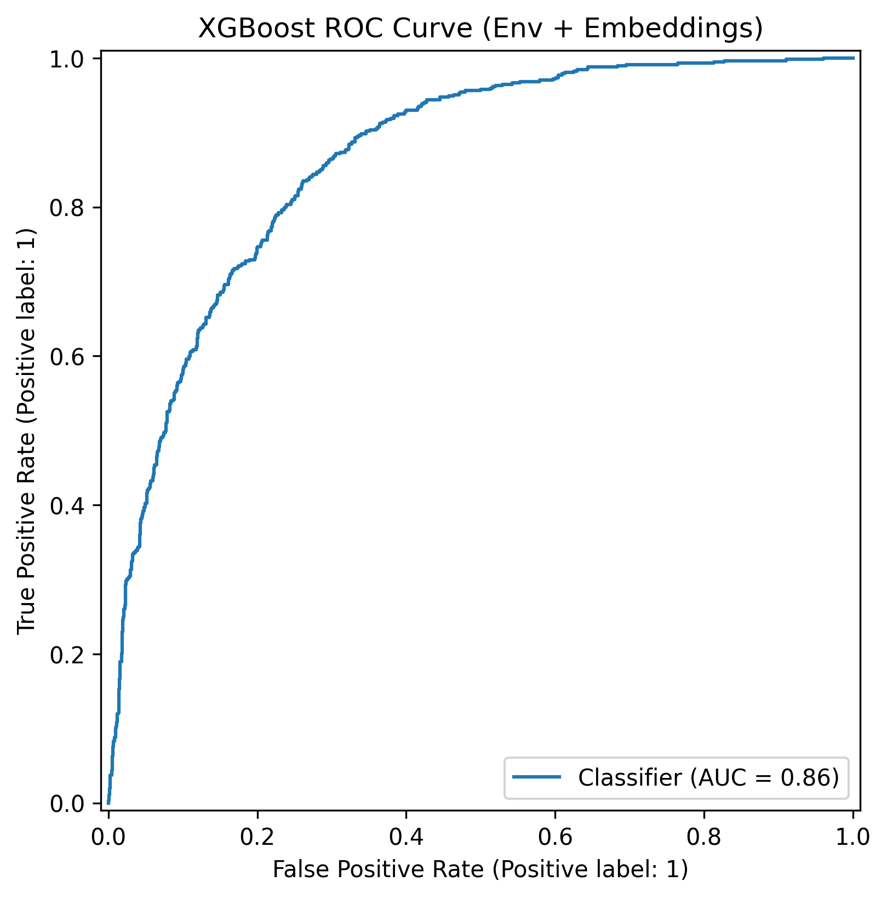
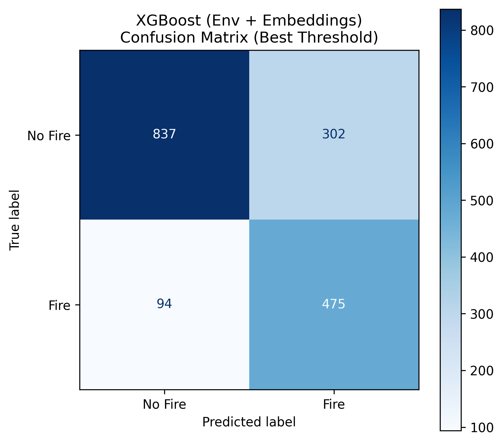
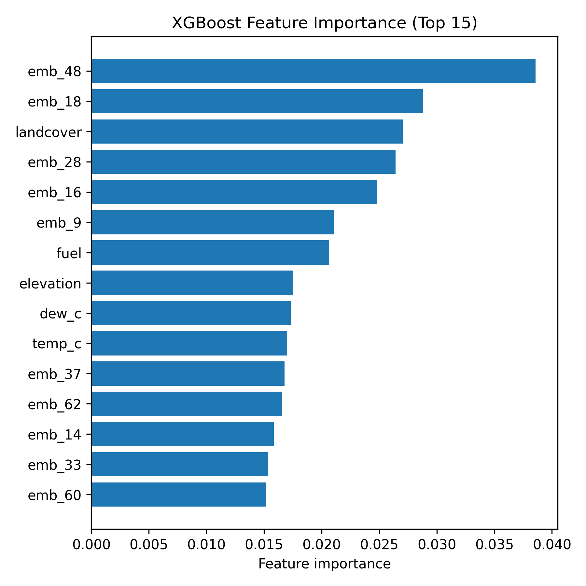

I'm a Geography student at CU Boulder focused on GIS, remote sensing, and web mapping — turning field data and satellite imagery into maps and tools people actually use, from community infrastructure planning to spatial machine learning.
Background and focus areas.
Bachelor of Arts in Geography, University of Colorado Boulder (expected May 2026). Coursework spans machine learning & spatial data, statistics & geographic data, environment-society geography, and interdisciplinary data science.
Field GIS data collection (QGIS/QField), remote sensing and spatial machine learning (Google Earth Engine, Python), interactive web maps (Leaflet, Mapbox GL, ArcGIS Online), and communicating spatial findings to non-technical stakeholders — funders, community partners, and the public.
A mix of field-collected GIS work, web mapping, and spatial data analysis.

A self-directed field mapping project supporting a community water and garden infrastructure initiative in Chipanga Village, Tanzania. Collected and geolocated 100+ water and infrastructure features across a 7-layer dataset (water towers, pipelines, solar arrays, fencing, garden plots, school buildings), then built an interactive map and water-usage calculator to communicate findings to investors and stakeholders.
Impact: presented to investors and community stakeholders to support funding and planning decisions for the water and garden infrastructure.

An interactive storymap for a Political Ecology of Latin America course project, tracing a migration route from Mexico to the United States alongside geographic layers on border infrastructure, checkpoints, and terrain — built to pair a real narrative (drawn from the memoir Solito) with spatial context.
Impact: completed as a Political Ecology of Latin America capstone case study, integrating six GIS data layers with a first-person migration narrative.
Built during a field research internship with the Colorado Native Plant Society — 140+ field hours collecting native seeds statewide. Built and published an interactive ArcGIS Online web map, integrated into a public-facing StoryMap documenting CoNPS's history, mission, and seed-collection regions.
Impact: supported CoNPS's statewide native seed conservation effort with a public-facing map of collection regions.
A wildfire ignition risk model built with a project partner (Kai Skowlund) for a graduate-level Machine Learning course, covering Colorado, New Mexico, Wyoming, and Utah. Combined 64-dimensional AlphaEarth satellite embeddings with environmental covariates (NDVI, climate, terrain, fuel, land cover) drawn from Sentinel-2, ERA5, USGS SRTM, LANDFIRE, NLCD, and VIIRS. Trained and compared five models (Logistic Regression, Random Forest, XGBoost, LightGBM, Neural Network); XGBoost with embeddings and environmental covariates performed best after threshold tuning, reaching 0.86 AUC and 0.83 recall — prioritizing recall to minimize missed fire risk.
Impact: produced a Colorado-wide risk surface (map above, ~14,000 grid points) that could support wildland-urban interface preparedness and resource planning.




Tools and methods I use across fieldwork, analysis, and web mapping.
Full experience, education, and skills.
PDF, updated regularly.